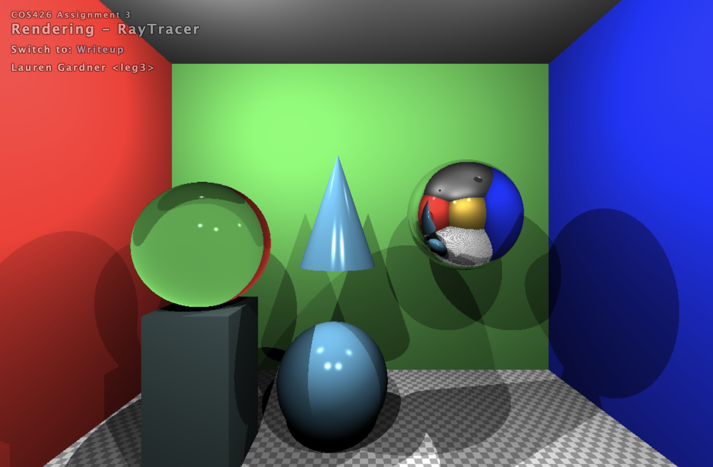

COS426 Assignment 3 Ray Tracer — Writeup
Switch to: Interactive Editor
LATE DAYS USED: 1
That all images in this writeup were generated directly by my solution code or provided by the course staff (exception: art contest submissions may pass through intermediary software like GIMP)
That no other student has viewed my writeup explanations or my writeup images
That my solution code is my own work; particularly that my solution was not copied from any other student's solution code, and that no other student copied their solution directly code from me
That I did not discuss assignment specifics or view the solution code of any other student besides that of my (optional) partner
That I have followed all other course collaboration and course plagiarism policies as written on the course website.
Lauren Gardner leg3
Collaborated with: Warren Quan wquan
- (1.0) Trace Ray and Calculate Color
- (2.0) Triangle
- (2.0) Sphere
- (2.5) Box
- (3.0) Cone
- (1.0) Shadows
- (3.0) Soft shadows
- (2.0) Transmission
- (1.0) Checkerboard
- (1.5) Phong material
- (1.5) Special material
TraceRay
For the first part of the assignment, I followed the provided
instructions to complete the traceRay and calculateColor
functions.
Triangle
I first found the normal of the triangle using the points passed in, calculated the distance, and used findIntersectionWithPlane to find the point of intersection. I then used the second method from the lecture slides to determine if the point was within the triangle or not.
Sphere
Using the geometric method provided in the lecture slides, I coded findIntersectionWithSphere. I made sure to return the closest intersection point at the end of the calculations.
Box
I first declared a helper function called pointInBox that took in the current pmin, pmax, and intersection point. I took these in as vec2 objects because the box is axis aligned. Using these points I just checked that the point was within their bounds and returned true/false accordingly. As for the box implementation, I used findIntersectionWithPlane to find the intersection point, I then checked if it was the closer point or not. Since the box is axis aligned, I went through all axis pairs and ran these tests on them.
close up

Cone
I implemented cone by carefully following the section description on the assingment page. After setting the variables and calculating the quadradtic form, I then verified that an intersection was found and computed the normal for that point. As for getIntersectDisc, I used findIntersectionWithPath to identify the intersection, and used the formula given in the cylinder spec to determine if it is a valid intersection point.
close up
Shadows
I started by tracing a ray from the point in question to the light. I then compared the distance between the point and the light, and the distance between the point and the intersection if there was one. If the intersection distance was greater than the distance to the light, then the point is NOT in shadow. If it was less then the distance to the light, that means the light is blocked by an object and the point is in shadow.

close up
Soft shadows
I first started by coding the helper function 'rand' using the referenced link in the assingment description. I then used the other referenced link to code the sampling along a sphere. I returned to number of points in light divided by the number sampled.
close up
Transmission
I computed the refraction value using Snell's law from the lecture slides as recommended.
Here's an example of it with my special material.
Checkerboard
I first round the intersection and divided the x, y, and z values. I gathered the sum of all of these and then divided by 2 to determine which color that point would be.
Phong material
I calculated the phong term using the formula provided in the lecture slides and returned the phong value.
Close up to the matte sphere.
Special material
While trying to code checkerboard I discovered this weird texture. It happened when I was trying a different implementation for checkerboard that only worked 2 dimensionally. In an attempt to make it work in 3 dimensions I multiplied two of the points together.
It looks even cooler when moving the camera, the star like shapes start to shake and look like flashing stars.